ggplot(penguins, aes(x = flipper_length_mm, y = body_mass_g)) +
geom_point()Warning: Removed 2 rows containing missing values or values outside the scale
range (`geom_point()`).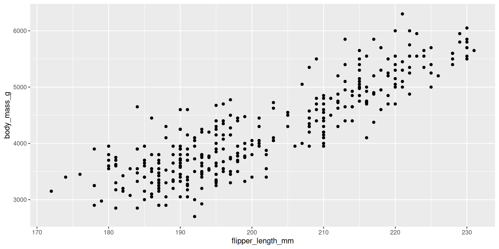
Lecture 14
A researcher wants to see how body mass varies with flipper length.
. . .
outcome: body mass in grams (numerical)
predictor: flipper length in mm (numerical)
. . .
Flipper length is easier to measure, so more plausible you would predict body mass based on that and not the other way around.
ggplot(penguins, aes(x = flipper_length_mm, y = body_mass_g)) +
geom_point()Warning: Removed 2 rows containing missing values or values outside the scale
range (`geom_point()`).
ggplot(penguins, aes(x = flipper_length_mm, y = body_mass_g)) +
geom_point() +
geom_smooth(method = "lm")`geom_smooth()` using formula = 'y ~ x'Warning: Removed 2 rows containing non-finite outside the scale range
(`stat_smooth()`).Warning: Removed 2 rows containing missing values or values outside the scale
range (`geom_point()`).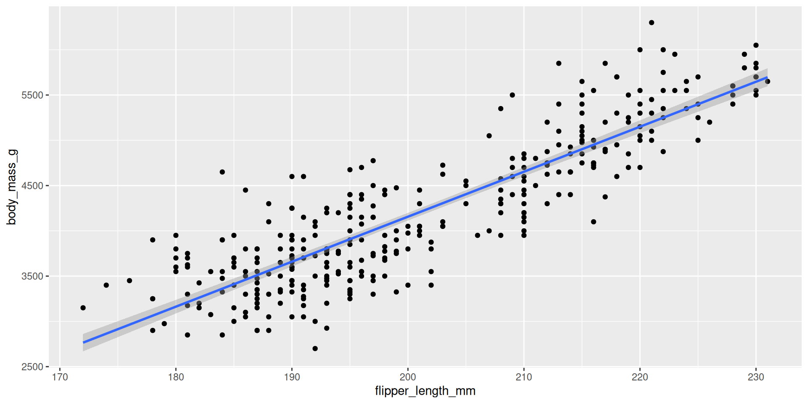
penguins |>
summarize(
r = cor(flipper_length_mm, body_mass_g, use = "complete.obs")
)# A tibble: 1 × 1
r
<dbl>
1 0.871Measures the strength and direction of the linear association between two numerical variables. Strong and positive in this case.
bm_fl_fit <- linear_reg() |>
fit(body_mass_g ~ flipper_length_mm, data = penguins)
tidy(bm_fl_fit)# A tibble: 2 × 5
term estimate std.error statistic p.value
<chr> <dbl> <dbl> <dbl> <dbl>
1 (Intercept) -5781. 306. -18.9 5.59e- 55
2 flipper_length_mm 49.7 1.52 32.7 4.37e-107\[ \widehat{body~mass}=-5780.83+49.68\times flipper~length \]
The fraction of the variation in the response explained by the model. A number between 0 (bad) and 1 (good) that measures goodness-of-fit:
bm_fl_fit |>
glance() |>
select(r.squared)# A tibble: 1 × 1
r.squared
<dbl>
1 0.759penguins |>
summarize(
r = cor(flipper_length_mm, body_mass_g, use = "complete.obs"),
R2 = r^2
)# A tibble: 1 × 2
r R2
<dbl> <dbl>
1 0.871 0.759\[ \widehat{body~mass}=-5780.83+49.68\times flipper~length \]
`geom_smooth()` using formula = 'y ~ x'Warning: Removed 2 rows containing non-finite outside the scale range
(`stat_smooth()`).Warning: Removed 2 rows containing missing values or values outside the scale
range (`geom_point()`).
new_penguin <- tibble(flipper_length_mm = 205)
predict(bm_fl_fit, new_data = new_penguin)# A tibble: 1 × 1
.pred
<dbl>
1 4405.\[ \widehat{body~mass}=-5780.83+49.68\times 205\approx 4404.71 \]
. . .
We predict that a penguin whose flipper is 205 mm long will weigh 4404.71 grams on average.
A different researcher wants to look at body weight of penguins based on the island they were recorded on. How are the variables involved in this analysis different?
. . .
outcome: body mass in grams (numerical)
predictor: island (categorical with three levels)
. . .
levels(penguins$island)[1] "Biscoe" "Dream" "Torgersen"Visualize the relationship between body weight and island of penguins. Also calculate the average body weight per island.
ggplot(penguins, aes(x = island, y = body_mass_g)) +
geom_point()Warning: Removed 2 rows containing missing values or values outside the scale
range (`geom_point()`).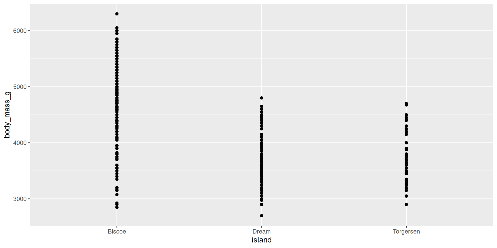
Visualize the relationship between body weight and island of penguins. Also calculate the average body weight per island.
ggplot(
penguins,
aes(x = island, y = body_mass_g)
) +
geom_boxplot() +
labs(
x = "Island",
y = "Body mass (g)",
title = "Body mass by island"
)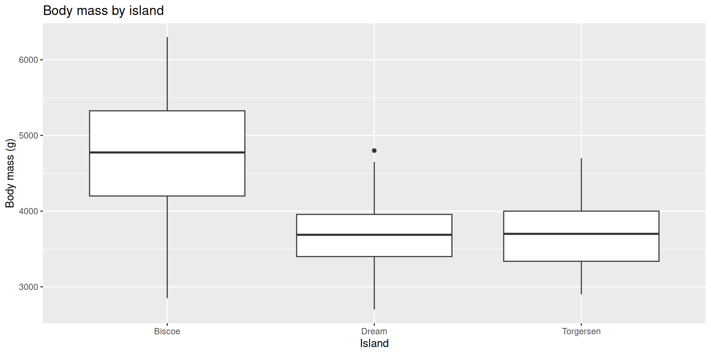
penguins |>
group_by(island) |>
summarize(
bm_mean = mean(body_mass_g, na.rm = TRUE)
)# A tibble: 3 × 2
island bm_mean
<fct> <dbl>
1 Biscoe 4716.
2 Dream 3713.
3 Torgersen 3706.ggplot(
penguins,
aes(x = body_mass_g, color = island, fill = island)
) +
geom_density(alpha = 0.5) +
scale_color_colorblind() +
scale_fill_colorblind() +
labs(
x = "Island",
y = "Body mass (g)",
title = "Body mass by island"
)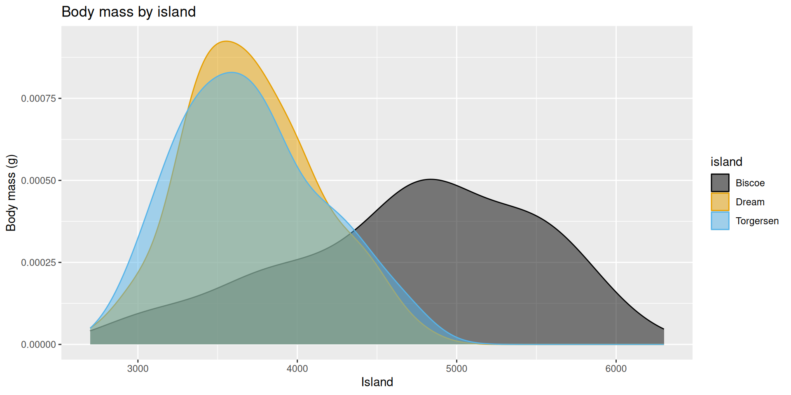
ggplot(
penguins,
aes(x = island, y = body_mass_g)
) +
geom_violin() +
labs(
x = "Island",
y = "Body mass (g)",
title = "Body mass by island"
)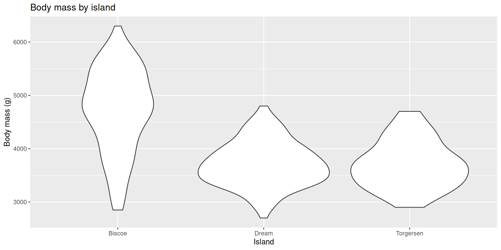
ggplot(
penguins,
aes(x = island, y = body_mass_g, color = island)
) +
geom_boxplot() +
geom_beeswarm(size = 2, alpha = 0.5) +
scale_color_colorblind() +
labs(
x = "Island",
y = "Body mass (g)",
title = "Body mass by island"
) +
theme(legend.position = "none")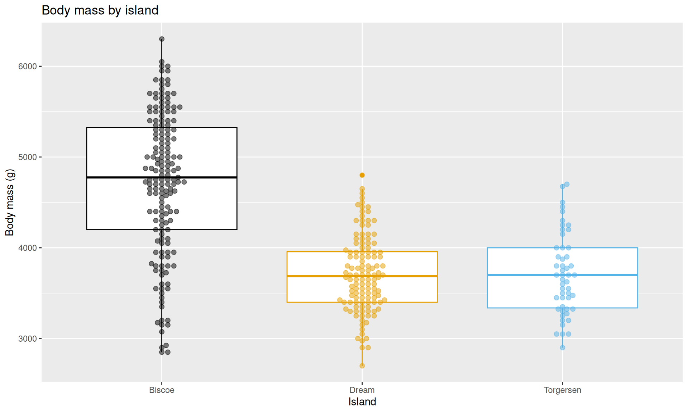
Fit a linear regression model predicting body weight from island and display the results. Why is Biscoe not on the output?
bm_island_fit <- linear_reg() |>
fit(body_mass_g ~ island, data = penguins)
tidy(bm_island_fit)# A tibble: 3 × 5
term estimate std.error statistic p.value
<chr> <dbl> <dbl> <dbl> <dbl>
1 (Intercept) 4716. 48.5 97.3 8.93e-250
2 islandDream -1003. 74.2 -13.5 1.42e- 33
3 islandTorgersen -1010. 100. -10.1 4.66e- 21. . .
Huh?
dummy_penguins <- penguins |>
select(body_mass_g, island) |>
arrange(body_mass_g) |>
mutate(
islandDream = if_else(island == "Dream", 1, 0),
islandTorgersen = if_else(island == "Torgersen", 1, 0),
)
dummy_penguins# A tibble: 344 × 4
body_mass_g island islandDream islandTorgersen
<int> <fct> <dbl> <dbl>
1 2700 Dream 1 0
2 2850 Biscoe 0 0
3 2850 Biscoe 0 0
4 2900 Biscoe 0 0
5 2900 Dream 1 0
6 2900 Torgersen 0 1
7 2900 Dream 1 0
8 2925 Biscoe 0 0
9 2975 Dream 1 0
10 3000 Dream 1 0
# ℹ 334 more rowslinear_reg() |>
fit(
body_mass_g ~ islandDream + islandTorgersen,
dummy_penguins
) |>
tidy()# A tibble: 3 × 5
term estimate std.error statistic p.value
<chr> <dbl> <dbl> <dbl> <dbl>
1 (Intercept) 4716. 48.5 97.3 8.93e-250
2 islandDream -1003. 74.2 -13.5 1.42e- 33
3 islandTorgersen -1010. 100. -10.1 4.66e- 21. . .
Exactly the same as before!
\[ \widehat{body~mass} = 4716 - 1003 \times islandDream - 1010 \times islandTorgersen \]
Intercept: Penguins from Biscoe island are expected to weigh, on average, 4,716 grams.
Slope - islandDream: Penguins from Dream island are expected to weigh, on average, 1,003 grams less than those from Biscoe island.
Slope - islandTorgersen: Penguins from Torgersen island are expected to weigh, on average, 1,010 grams less than those from Biscoe island.
What is the predicted body weight of a penguin on Biscoe island? What are the estimated body weights of penguins on Dream and Torgersen islands? Where have we seen these values before?
Calculate the predicted body weights of penguins on Biscoe, Dream, and Torgersen islands by hand.
\[ \widehat{body~mass} = 4716 - 1003 \times islandDream - 1010 \times islandTorgersen \]
. . .
. . .
. . .
penguins |>
group_by(island) |>
summarize(
bm_mean = mean(body_mass_g, na.rm = TRUE)
)# A tibble: 3 × 2
island bm_mean
<fct> <dbl>
1 Biscoe 4716.
2 Dream 3713.
3 Torgersen 3706.When the categorical predictor has many levels, they’re encoded as dummy variables.
The first level of the categorical variable is the baseline level. In a model with one categorical predictor, the intercept is the predicted value of the outcome for the baseline level (x = 0).
Each slope coefficient describes the difference between the predicted value of the outcome for that level of the categorical variable compared to the baseline level.
Predicting continuous outcome \(Y\) using one categorical predictor \(X\) with multiple levels 0, 1, 2, …, \(L\). Create dummy variables for every level except the base level:
. . .
\[ cat_l=\begin{cases} 1 & X=l\\ 0 & \text{else} \end{cases} \]
. . .
Then fit a regression with multiple dummy predictors:
\[ \hat{Y} = b_0 + b_1 \times cat_1 + b_2 \times cat_2 \ldots + b_L \times cat_L \]
\(b_0\) : the model prediction for a member of the base level;
\(b_1\): how does the prediction change when we move from the base level to level 1?
\(b_2\): how does the prediction change when we move from the base level to level 2?
etc
. . .
The computer handles all of this for you, but you need to understand the details so you code and interpret it correctly.
By default, R uses the first level of a categorical variable as the baseline level. this is often the first alphabetically, but make sure you check!
We can change the baseline level by reordering the levels of the categorical variable.
ggplot(penguins,
aes(x = flipper_length_mm, y = body_mass_g, color = island)
) +
geom_point()Warning: Removed 2 rows containing missing values or values outside the scale
range (`geom_point()`).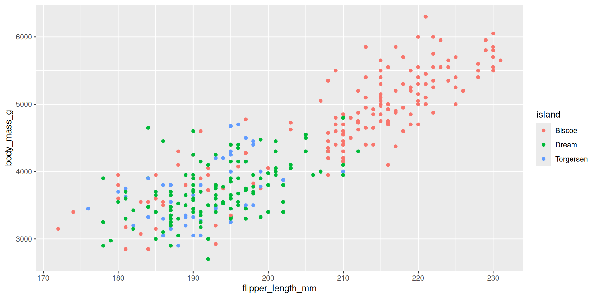
Both of these models use flipper_length_mm and island to predict body_mass_g:
`geom_smooth()` using formula = 'y ~ x'Warning: Removed 2 rows containing non-finite outside the scale range
(`stat_smooth()`).Warning: Removed 2 rows containing missing values or values outside the scale
range (`geom_point()`).`geom_smooth()` using formula = 'y ~ x'Warning: Removed 2 rows containing non-finite outside the scale range
(`stat_smooth()`).
Removed 2 rows containing missing values or values outside the scale
range (`geom_point()`).
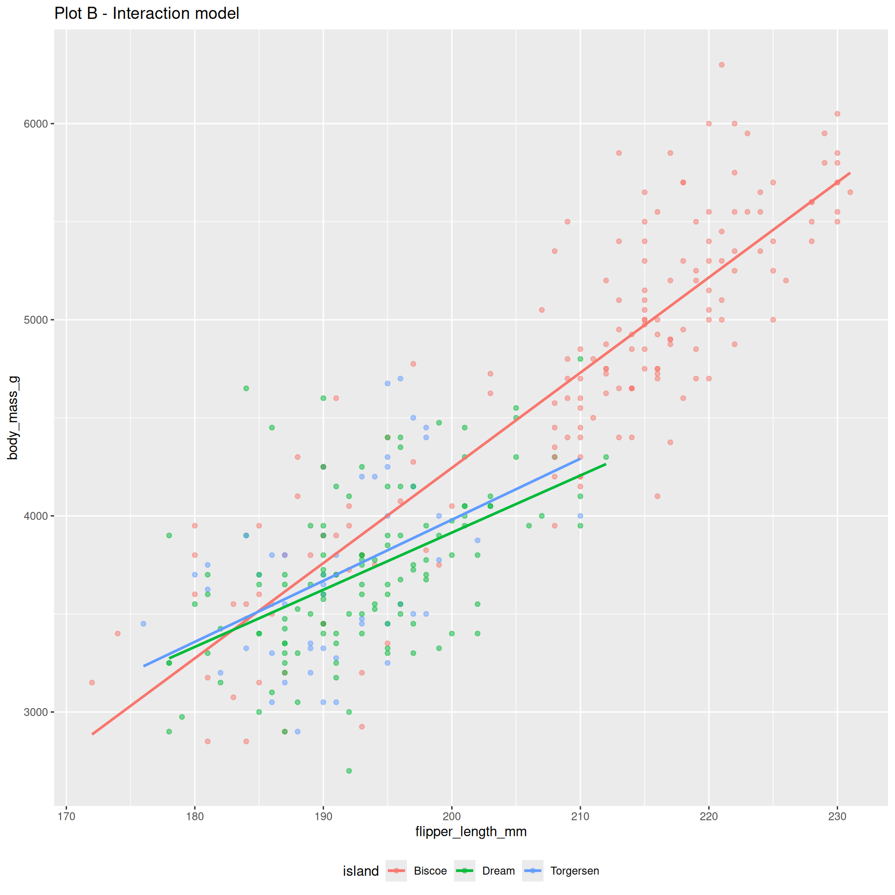
`geom_smooth()` using formula = 'y ~ x'Warning: Removed 2 rows containing non-finite outside the scale range
(`stat_smooth()`).Warning: Removed 2 rows containing missing values or values outside the scale
range (`geom_point()`).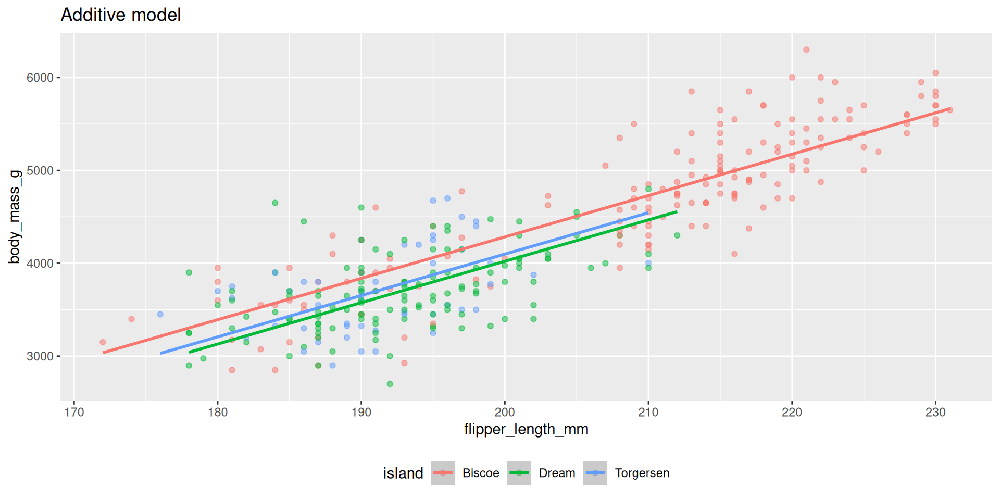
bm_fl_island_fit <- linear_reg() |>
fit(body_mass_g ~ flipper_length_mm + island, data = penguins)
tidy(bm_fl_island_fit)# A tibble: 4 × 5
term estimate std.error statistic p.value
<chr> <dbl> <dbl> <dbl> <dbl>
1 (Intercept) -4625. 392. -11.8 4.29e-27
2 flipper_length_mm 44.5 1.87 23.9 1.65e-74
3 islandDream -262. 55.0 -4.77 2.75e- 6
4 islandTorgersen -185. 70.3 -2.63 8.84e- 3\[ \begin{aligned} \widehat{body~mass} = -4625 &+ 44.5 \times flipper~length \\ &- 262 \times Dream \\ &- 185 \times Torgersen \end{aligned} \]
\[ \begin{aligned} \widehat{body~mass} = -4625 &+ 44.5 \times flipper~length \\ &- 262 \times Dream \\ &- 185 \times Torgersen \end{aligned} \]
. . .
If penguin is from Biscoe, Dream = 0 and Torgersen = 0:
. . .
\[ \begin{aligned} \widehat{body~mass} = -4625 &+ 44.5 \times flipper~length \end{aligned} \]
. . .
If penguin is from Dream, Dream = 1 and Torgersen = 0:
. . .
\[ \begin{aligned} \widehat{body~mass} = -4887 &+ 44.5 \times flipper~length \end{aligned} \]
. . .
If penguin is from Torgersen, Dream = 0 and Torgersen = 1:
. . .
\[ \begin{aligned} \widehat{body~mass} = -4810 &+ 44.5 \times flipper~length \end{aligned} \]
. . .
Either way, same slope, so the lines are parallel.
ggplot(
penguins,
aes(x = flipper_length_mm, y = body_mass_g, color = island)
) +
geom_point() +
geom_smooth(method = "lm", se = FALSE) +
labs(title = "Interaction model") +
theme(legend.position = "bottom")`geom_smooth()` using formula = 'y ~ x'Warning: Removed 2 rows containing non-finite outside the scale range
(`stat_smooth()`).Warning: Removed 2 rows containing missing values or values outside the scale
range (`geom_point()`).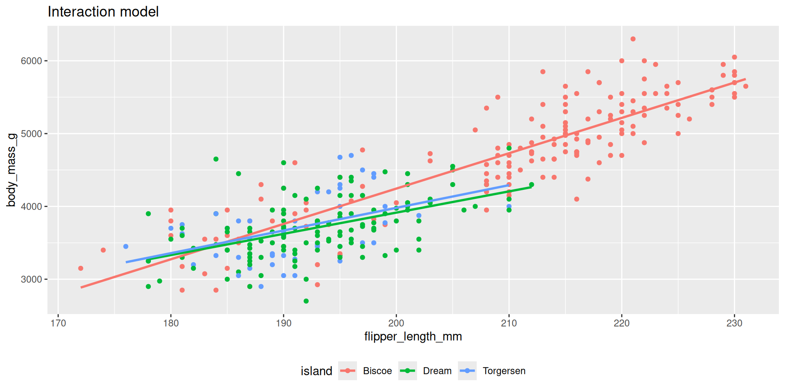
bm_fl_island_int_fit <- linear_reg() |>
fit(body_mass_g ~ flipper_length_mm * island, data = penguins)
tidy(bm_fl_island_int_fit) |> select(term, estimate)# A tibble: 6 × 2
term estimate
<chr> <dbl>
1 (Intercept) -5464.
2 flipper_length_mm 48.5
3 islandDream 3551.
4 islandTorgersen 3218.
5 flipper_length_mm:islandDream -19.4
6 flipper_length_mm:islandTorgersen -17.4. . .
\[ \begin{aligned} \widehat{body~mass} = -5464 &+ 48.5 \times flipper~length \\ &+ 3551 \times Dream \\ &+ 3218 \times Torgersen \\ &- 19.4 \times flipper~length*Dream \\ &- 17.4 \times flipper~length*Torgersen \end{aligned} \]
\[ \begin{aligned} \small\widehat{body~mass} = -5464 &+ 48.5 \times flipper~length \\ &+ 3551 \times Dream \\ &+ 3218 \times Torgersen \\ &- 19.4 \times flipper~length*Dream \\ &- 17.4 \times flipper~length*Torgersen \end{aligned} \]
. . .
If penguin is from Biscoe, Dream = 0 and Torgersen = 0:
. . .
\[ \begin{aligned} \widehat{body~mass} = -5464 &+ 48.5 \times flipper~length \end{aligned} \]
. . .
If penguin is from Dream, Dream = 1 and Torgersen = 0:
. . .
\[ \begin{aligned} \widehat{body~mass} &= (-5464 + 3551) + (48.5-19.4) \times flipper~length\\ &=-1913+29.1\times flipper~length. \end{aligned} \]
`geom_smooth()` using formula = 'y ~ x'Warning: Removed 2 rows containing non-finite outside the scale range
(`stat_smooth()`).Warning: Removed 2 rows containing missing values or values outside the scale
range (`geom_point()`).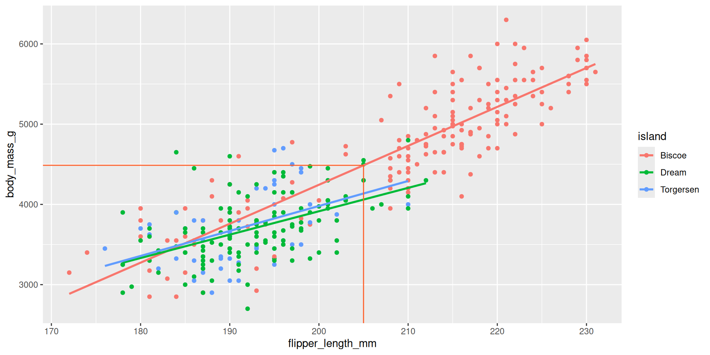
new_penguin <- tibble(
flipper_length_mm = 205,
island = "Biscoe"
)
predict(bm_fl_island_int_fit, new_data = new_penguin)# A tibble: 1 × 1
.pred
<dbl>
1 4488.\[ \widehat{body~mass} = -5464 + 48.5 \times 205. \]
`geom_smooth()` using formula = 'y ~ x'Warning: Removed 2 rows containing non-finite outside the scale range
(`stat_smooth()`).Warning: Removed 2 rows containing missing values or values outside the scale
range (`geom_point()`).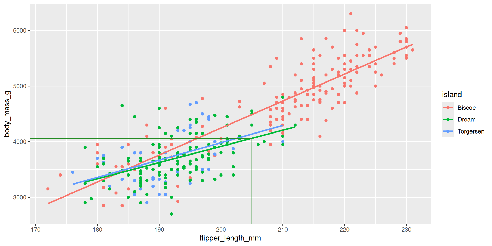
new_penguin <- tibble(
flipper_length_mm = 205,
island = "Dream"
)
predict(bm_fl_island_int_fit, new_data = new_penguin)# A tibble: 1 × 1
.pred
<dbl>
1 4060.\[ \widehat{body~mass} = (-5464 + 3551) + (48.5 - 19.4) \times 205. \]
`geom_smooth()` using formula = 'y ~ x'Warning: Removed 2 rows containing non-finite outside the scale range
(`stat_smooth()`).Warning: Removed 2 rows containing missing values or values outside the scale
range (`geom_point()`).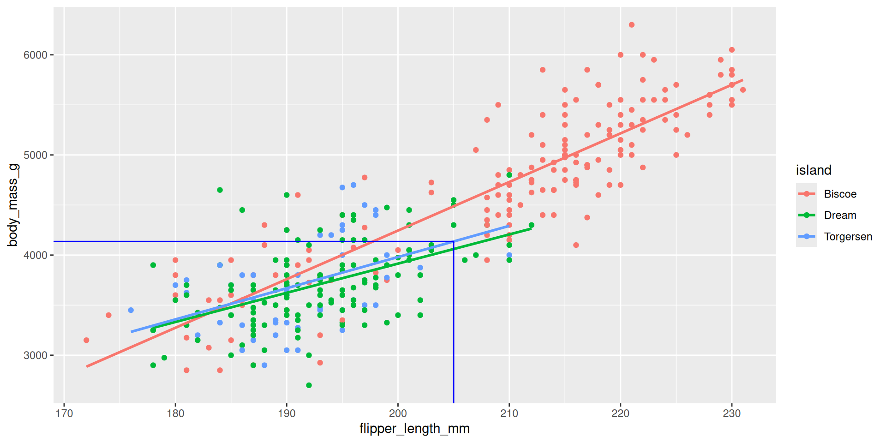
new_penguin <- tibble(
flipper_length_mm = 205,
island = "Torgersen"
)
predict(bm_fl_island_int_fit, new_data = new_penguin)# A tibble: 1 × 1
.pred
<dbl>
1 4136.\[ \widehat{body~mass} = (-5464 + 3218) + (48.5 - 17.4) \times 205. \]
bm_fl_bl_fit <- linear_reg() |>
fit(body_mass_g ~ flipper_length_mm + bill_length_mm, data = penguins)
tidy(bm_fl_bl_fit)# A tibble: 3 × 5
term estimate std.error statistic p.value
<chr> <dbl> <dbl> <dbl> <dbl>
1 (Intercept) -5737. 308. -18.6 7.80e-54
2 flipper_length_mm 48.1 2.01 23.9 7.56e-75
3 bill_length_mm 6.05 5.18 1.17 2.44e- 1. . .
\[ \small\widehat{body~mass}=-5736+48.1\times flipper~length+6\times bill~length \]
\[ \small\widehat{body~mass}=-5736+48.1\times flipper~length+6\times bill~length \]
. . .
Interpretations:
new_penguin <- tibble(
flipper_length_mm = 200,
bill_length_mm = 45
)
predict(bm_fl_bl_fit, new_data = new_penguin)# A tibble: 1 × 1
.pred
<dbl>
1 4164.\[ \widehat{body~mass}=-5736+48.1\times 200+6\times 45 \]
2 predictors + 1 response = 3 dimensions. Ick!
Warning: Unknown or uninitialised column: `color`.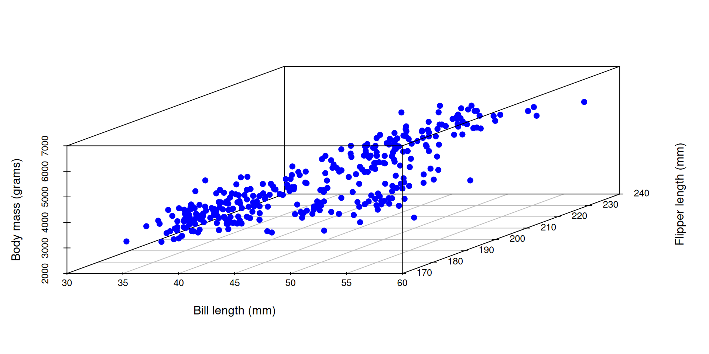
Instead of a line of best fit, it’s a plane of best fit. Double ick!
Warning: Unknown or uninitialised column: `color`.
Multiple linear regression captures the relationship between a numerical outcome \(Y\) and many numerical predictors \(X_1\), \(X_2\), …, \(X_p\):
\[\Large{Y = \beta_0 + \beta_1 X_1 + \beta_2 X_2 + ...+ \beta_p X_p+\epsilon}\]
. . .
The model with the greek letters and the error term is the “true,” idealized, population relationship that we could access if we had infinite amounts of perfect data. But we don’t, so we have to settle for…
\[\Large{\hat{Y} = b_0 + b_1 X_1 + b_2 X_2 + ... + b_pX_p}\]
. . .
This is your best guess at the true regression function based on the noisy, meager, imperfect data you actually have access to. We still compute the \(b_j\) using the principle of least squares: pick the estimates that make the sum of squared residuals as small as possible.
Today we saw multiple models that are all attempting to do the same thing: predict body mass.